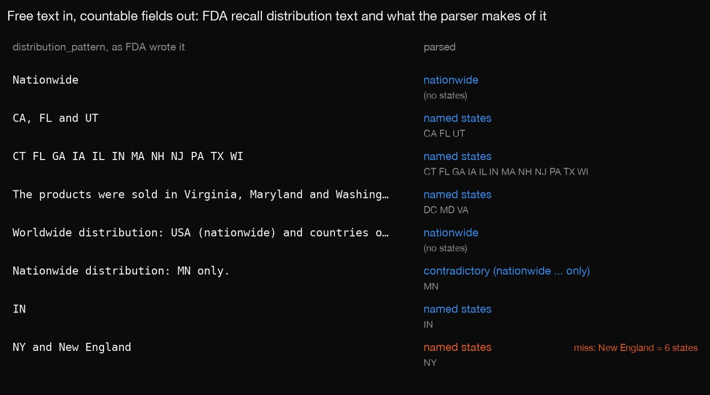
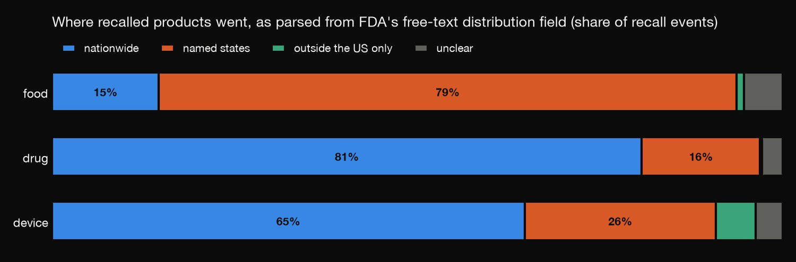
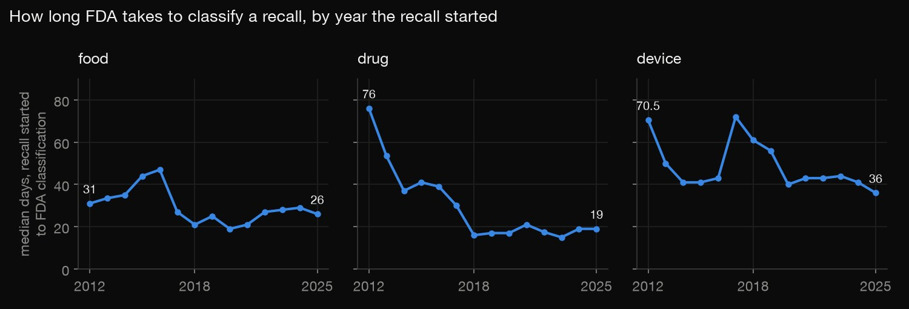
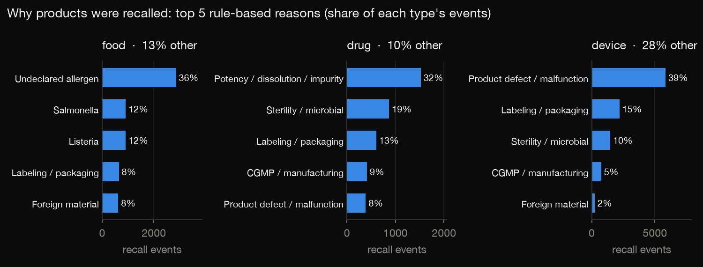

Python · Data wrangling · 2026-10
Where Did the Recalled Food Go?
87,508 FDA recall records for food, drugs and devices, cleaned: product rows grouped into recall events, impossible dates set aside, and free-text distribution notes turned into US states. The parser is tested on hand-labelled events it never saw.

The parser got 52 of 60 unseen events right (two holdouts, 26/30 each), so expect roughly 85–90% accuracy, not 100%. The reason classes are rules that were not checked against labels. "Named states" means where the firm says it shipped, not where products were sold.
01 — The problem
When FDA announces a recall, the first question is did it reach my state? The answer is in every recall record, but as a sentence someone typed: "Nationwide", "CA, FL and UT", "The products were sold in Virginia, Maryland and Washington, D.C.", "Worldwide distribution: USA (nationwide) and countries of: Canada, Japan, and Taiwan."
Can that text be turned into fields an analyst can count, and how often is the result right?
02 — What I built
A cleaning pipeline over the full openFDA enforcement-report download (export of 28 September 2026, every recall since June 2012):
- Units: 87,508 product rows grouped into 27,613 recall events.
- Dates: 2,978 rows with impossible dates set aside, not repaired.
- Distribution: free text turned into a class (nationwide, named states, outside the US only, …) plus the set of states named.
- Reason and quantity: each sorted into classes by rules.
- Check: the parser is scored against 100 events read by hand, and DuckDB recomputes the counts from the raw JSON on its own.
03 — How it was built
- 01
Download every recall
openFDA offers its full enforcement-report data as bulk JSON: food, drugs and devices, 490 MB in all. The script records each file's export date and row count, so the numbers on this page can be traced to one snapshot.
- 02
Count events, not rows
One recall event (one firm, one problem) lists every affected product as its own row. The biggest event has 470 rows. Counting rows would inflate food recalls 3.7 times and devices 2.7 times, so every event-level figure uses one row per event.
- 03
Set aside impossible dates
2,978 rows have dates that can't be right:
- 2,958 were reported before FDA classified them (probably reclassified later);
- 15 were classified before the recall began;
- 3 were never classified;
- 2 started before 2000, one in the year 0212.
They are flagged and left out of the timing figures rather than guessed at.
- 04
Turn distribution text into states
The parser looks for state codes and full state names. Most of the work is in the traps:
- codes that are also English words (IN, OR, ME, OK, HI) count only inside a list, or when the text isn't written in capitals;
- "Washington" is not "Washington, D.C.";
- after "countries of" or "O.U.S.", CA means Canada and IN means India.
Each event then gets a class: nationwide, named states, outside the US only, US with no states named, contradictory ("Nationwide distribution: MN only"), or not parsed.
# a run of 3+ two-letter codes ("CT FL GA IN MA") is a list even with only spaces between them CODE_RUN = re.compile(r"(?<![A-Za-z])(?:[A-Z]{2}(?![A-Za-z])[\s,;/&.]*){3,}") ... if code in WORDLIKE and caps and not in_list and t.strip().upper() != code: continue # "SOLD IN OREGON": IN is a word here, not Indiana - 05
Sort the reasons and quantities
Ordered rules assign each recall reason to one class: Listeria, Salmonella, E. coli, undeclared allergen, foreign material, sterility, potency, labeling, manufacturing, regulatory, or product defect. The first rule that matches wins. The quantity text gives a number and a unit where it can (cases, pounds, bottles, units).
- 06
Test it on events it never saw
The parser was scored on three sets of hand-labelled events:
- Development labels: 40 events read while the rules were written. It gets all 40 right.
- Holdout 1: 30 random events, labelled when the rules were frozen. It gets 26 right.
- A bug, found afterwards. Picking examples for this page showed that lists separated only by spaces dropped their word-like codes. "CT FL GA IA IL IN MA NH NJ PA TX WI" lost GA, IN, MA and PA. Holdout 1 never sampled that pattern, but it hit 197 events. The fix is the rule above.
- Holdout 2: fixing the rules meant holdout 1 was no longer blind, so 30 new events were drawn and labelled from the text alone. It gets 26 right.
Separately, DuckDB reads the raw JSON without pandas and reproduces every row, event and date-problem count and all nine timing medians.
04 — Results

Food recalls are regional; drug and device recalls go nationwide. 79% of food recall events name specific states, with a median of 4 when they do. 81% of drug recall events are nationwide. California, Texas, New York and Florida are named most often.
The text really is messy. The 14,659 nationwide events are written 8,913 different ways.

FDA classifies drug recalls much faster than it used to. The median time from recall start to classification fell from 76 days in 2012 to 15–21 days since 2018. Food takes 20–30 days. Devices take about 40 days, the slowest of the three. Recalls appear only once classified, so the latest years may look a little faster than they will end up.

Why recalls happen: food recalls are mostly undeclared allergens (36%), then Salmonella and Listeria (12% each). Drug recalls are mostly potency, dissolution or impurity problems (32%). Device recalls are mostly defects and malfunctions (39%). Quantity is the weakest field: 36–44% of rows have no number, or a unit the rules don't recognise.
05 — What I'd do next
- Label 100 recall reasons by hand and score the reason rules the way the distribution parser is scored.
- Teach the parser regions ("New England", "Pacific Northwest") and catch typos like "Natonwide".
- Divide events per state by population, to see which states actually get the most recalled products per person.